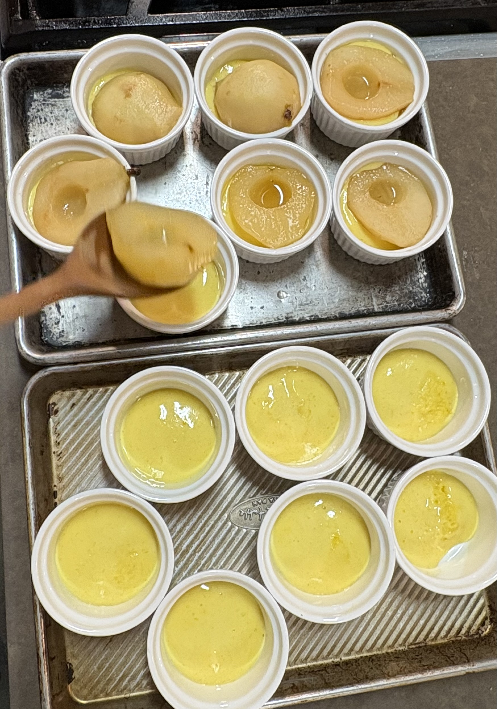
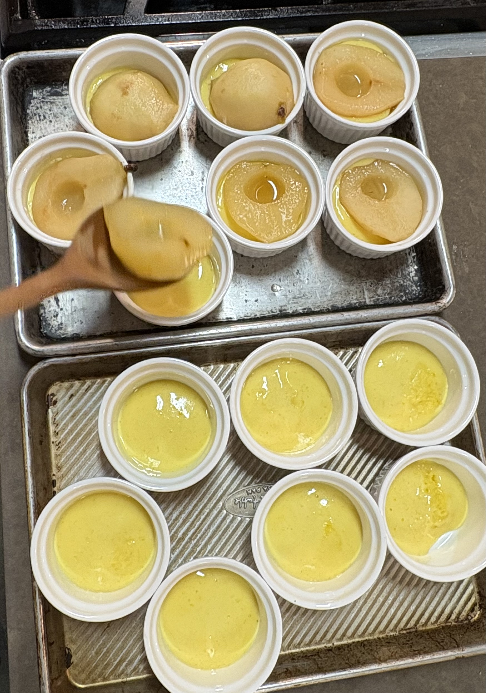

Hello! I’m Isabel, a BFA Communication Design student with a Photography minor at Parsons. My work is primarily food-focused, drawing inspiration from nature and the world around me.
I am currently managing the instagram reels for photographer Quentin Bacon, best known for his collaborations with Ina Garten and other renowned chefs.
I have had the pleasure working with Sur La Table as a Kitchen Assistant. Under instruction of a head chef I would assist cooking classes, prepare ingredients, and manage the organization of the kitchen.
 
